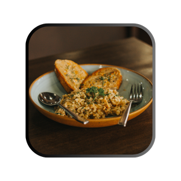

Mushroom Risotto

Ingredients
- 1 tablespoon olive oil
- 12 ounces mushrooms any variety, thinly sliced
- ¼ cup onion chopped
- 2 tablespoons butter
- 1 cup arborio rice
- ½ cup white wine or extra broth
- 3 cups chicken broth divided, or mushroom broth
- ⅓ cup freshly grated Parmesan cheese
Steps
- Warm the broth in the microwave.
- Add olive oil and mushrooms to a pan over medium-high heat. Cook until mushrooms are softened, about 5 minutes. Set aside.
- Add butter and onions to a saucepan, cook until tender, about 3-4 minutes. Stir in rice and cook until rice starts to lightly brown, about 5 minutes.
- Add wine and cook until evaporated while stirring. Add warmed broth ½ cup at a time stirring until evaporated after each addition. This will take about 20 minutes.
- Stir in mushrooms with any juices, parmesan cheese (reserve a couple of tablespoons for garnish) and parsley. Taste and add salt & pepper as needed. Garnish with fresh herbs as desired.